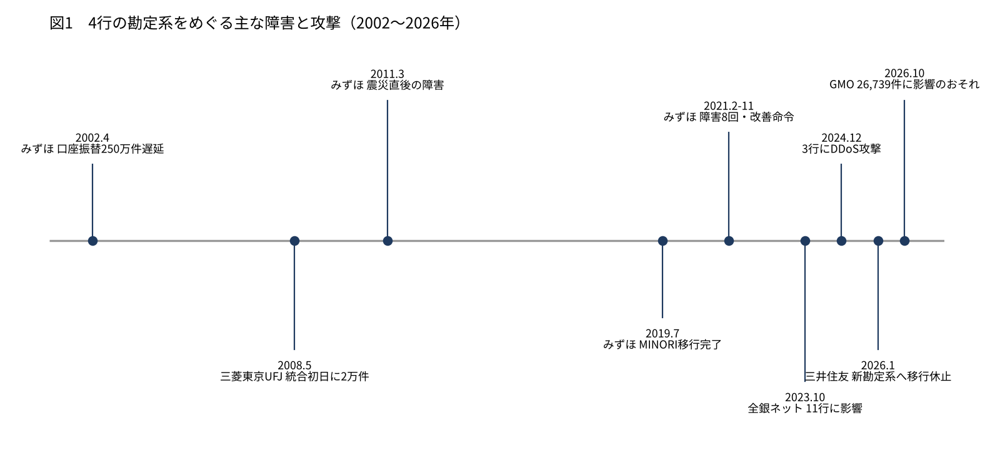
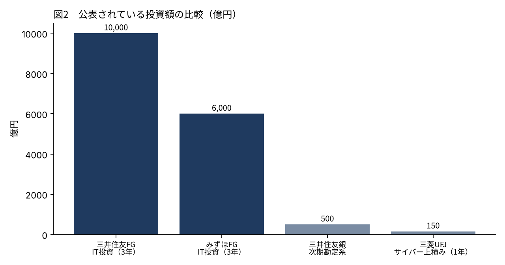

メガバンク3行とりそなの勘定系システムは、本当に古くて危ないのか
2026年10月、GMOのサーバーへの不正アクセスが明らかになった週、僕が持つ銀行株4行はそろって下げた。銀行のシステムは脆弱だ、とXでは何度も目にした。
しかし、実際に4行の勘定系が何でできていて、どんな障害を起こし、守りにいくら使っているのかを、数字で並べた記事は少ない。
この記事では、各行の公表資料と金融庁・経産省の資料をもとに、三菱UFJ・三井住友・みずほ・りそなの勘定系を1行ずつ確かめ、最後に「危ないのかどうか」を僕なりに判定する。

勘定系とは何か。4行とも中心はまだメインフレーム
勘定系とは、預金の残高・振込・貸し出しを記録する、銀行の中心の仕組みである。ここが止まれば、ATMも振込も止まる。
結論から書くと、4行とも勘定系の中心は今もメインフレーム（大型の専用計算機）である。ただし、ネットバンキングやAPIなどの周辺をオープン系（一般のサーバー）に置き、両方を組み合わせる方向で動いている。全部をクラウドに移した大手行は、まだ1つもない。
古い言語COBOLが使われているかどうかは、4行のどの公表資料にも書かれていなかった。
三井住友銀行：1兆円のIT投資と、2026年の移行
三井住友銀行の次期勘定系は、NECの次世代メインフレームとオープン系の基盤を組み合わせた構成だ。オープン系の側に勘定元帳の全量をリアルタイムで写したデータベースを置き、そこからAPIで外へつなぐ。
構築を担うのは日本総研で、規模は総投資額約500億円・約2万人月。当初は2025年度の移行完了を目指していたが、計画は2026年度中へ変わった。移行のため、2026年1月11日と12日にATMとネットバンキングを休止し、次の休止は7月19日と20日と発表されている。移行が完了したかは、まだ公表されていない。
守りの側では、三井住友フィナンシャルグループが新しい中期経営計画で3年間のIT投資を1兆円規模とした。前の中計の8,000億円から25%増で、邦銀では初めての規模とされる。専門スタッフは850名以上、欧米・アジアのSOCと連携して24時間365日の監視体制を置く。高性能AIを脅威とみなす専門チームも立ち上げた。
三菱UFJ銀行：IBMのメインフレームと、GMOとの合弁会社
三菱UFJ銀行の勘定系は、2008年の統合で旧東京三菱のIBM製システムに寄せた。統合初日にはセブン銀行のATMで約2万件の取引ができなくなる障害が起きている。
2024年10月には日本IBMと組み、地方銀行向けに勘定系の共同プラットフォームを提供すると発表した。三菱UFJ銀行のデータセンターにIBM製メインフレームを置く方式で、「高い信頼性が求められる業務はメインフレームを前提に考えている」と取締役が述べている。
一方で、新しく作るデジタルバンクの基盤にはGoogle Cloudを採用した。2026年9月に銀行免許を取り、サービス開始は2027年1〜3月ごろの予定である。
CSIRTの名前はMUFG-CERT。2025年度の経費は基盤強化・システム関連で約600億円増え、そのうちサイバーで約150億円、生成AIで約100億円とされる。2025年12月には、GMOインターネットグループの子会社と合弁会社「MUFG GMOセキュリティ」を作ると発表した。出資は三菱UFJ銀行が50.1%、GMOサイバーセキュリティ by イエラエが40.0%、GMOインターネットグループが9.9%である。今回の事件の当事者と、守りで組んでいる銀行がある。
みずほ銀行：MINORIと、2021年の8回の障害
みずほ銀行の勘定系はMINORIという。2018年6月に移行を始め、2019年7月に完了した。旧3行の勘定系を1つにまとめ、メインフレームを19台から5台に減らし、複数のベンダーで作った。投資総額は公表されていない。
障害の履歴は、4行の中で最も重い。2002年4月の発足直後に口座振替が約250万件遅れ、2011年3月には震災の直後に為替処理が遅れてATMも止まった。どちらも業務改善命令を受けている。
2021年は2月28日にATMの8割が止まり、カードや通帳が取り込まれた。その後も障害が続き、年間で8回起きた。11月26日に金融庁が業務改善命令を出し、同じ日に財務省も外為法に基づく是正措置命令を出している。
2023年からの3年間では、IT投資に約6,000億円を充てる計画で、そのうち約7割を障害の再発防止とシステム更新に使う。MINORIは開発から10年近くたち、複数のシステムをクラウドへ移す計画が公表されている。
りそな銀行：IBMのメインフレームと、コストを46%減らした10年
りそな銀行の勘定系は、日本IBM製のメインフレームを中心に運用してきた。切り替えは2000年・2003年・2008年・2015年に行われ、2015年の切り替えで24時間365日の稼働に対応した。運用はNTTデータや日本IBMなど複数の会社に分けて委託している。
特徴は、コストの下げ方にある。グループのシステムコストは2003年度の931億円から2014年度の500億円へ、約46%減った。API基盤を整えてオープン系へ移し、情報系のメインフレームは9台から7台に減らす方針だ。2026年3月に新しい中期経営計画を出したが、IT投資額とセキュリティ投資額は公表資料から確かめられなかった。
4行にまたがる障害と攻撃
1行の中で閉じない障害も起きている。2023年10月10日と11日の全銀ネットの障害では、三菱UFJ銀行・りそな銀行など11行に影響が出た。2日間で他行宛ての振込255万件と自行宛ての251万件が影響を受け、他行宛ての87万件が未処理になった。原因は中継コンピューターの更新に伴う手数料計算プログラムの不具合だった。
攻撃では、2024年の年末にDDoS攻撃が続いた。三菱UFJ銀行は12月26日からネットバンキングが不安定になり、28日朝に回復。りそな4行は12月29日夜から30日未明まで個人向けネットバンキングが使えず、2025年1月7日にも同様の障害が出た。みずほ銀行も12月31日朝からみずほダイレクトが不安定になった。三井住友銀行の被害は確認できなかった。
| 年月 | 銀行 | 何が起きたか |
|---|---|---|
| 2002年4月 | みずほ | 口座振替が約250万件遅延。業務改善命令 |
| 2008年5月 | 三菱東京UFJ | 統合初日に約2万件の取引ができず |
| 2011年3月 | みずほ | 震災直後の障害。業務改善命令 |
| 2019年7月 | みずほ | MINORIへの移行が完了 |
| 2021年2〜11月 | みずほ | 障害8回。11月26日に業務改善命令 |
| 2023年10月 | 全銀ネット | 11行に影響。他行宛て87万件が未処理 |
| 2024年12月 | 三菱UFJ・りそな・みずほ | DDoS攻撃でネットバンキングが不安定 |
| 2026年1月 | 三井住友 | 新勘定系への移行で休止。MUFG GMOセキュリティ設立 |
| 2026年10月 | GMO傘下 | infoQから約89万件、お名前.comで26,739件に影響のおそれ |

守りに、いくら使っているのか
公表されている投資額を並べると、三井住友FGの3年間1兆円、みずほFGの3年間約6,000億円が目立つ。三菱UFJは2025年度の1年でサイバーに約150億円を上積みした。りそなは投資額ではなく、10年で46%減らしたコストの側に数字がある。


金融庁は2024年10月4日に「金融分野におけるサイバーセキュリティに関するガイドライン」を策定し、同じ日から適用した。経営陣が主導し、グループ全体で、形式より実質を重視することを求めている。2025年10月には監督指針を改め、フィッシングに強い多要素認証を2026年6月末までに必須にするよう求めた。業界横断の演習Delta Wallも毎年行われている。
一方で経産省のDXレポートは、2025年以降に最大で年12兆円の経済損失が出る可能性を示し、21年以上動いている基幹系システムの割合が2025年に6割へ増えると見込んでいた。銀行の勘定系もその中に入る。
僕はこう見ている
古いか、と聞かれれば、古い。4行とも中心はメインフレームで、みずほ以外は2000年代以前に作られた基盤を更新しながら使っている。しかし、古いことと危ないことは別の話だと僕は思う。
障害の履歴を見ると、危ないのは「古さ」より「つなぎ目」である。みずほの2021年は旧3行をまとめた直後の運用で起き、2023年の全銀ネットは更新作業の不具合で起き、三菱UFJの2008年は統合初日に起きた。システムを変えるときに事故は起きる。三井住友が2026年に移行を進めている今は、その意味で見ておく時期だと思う。
攻撃に対しては、4行は少なくとも投資の規模と体制を公表している。GMOの事件と銀行株の下落を直接つないだ報道は、僕が調べた範囲では見つからなかった。10月23日の銀行株安は、記事では長期金利の低下で説明されている。
だから僕は、今週も銀行4行を1株も売らなかった。大きなお金ほど、止まったときに強い大手に置く、という考えは変えていない。見るのは、三井住友の移行が無事に終わるかと、障害が起きたときに各行がどれだけ早く何を公表するかである。危ないかどうかは、古さではなく、つなぎ目と公表の速さで判定したい。
出典
- 三井住友銀行「次期勘定系システムについて」（2020年11月11日） https://www.smbc.co.jp/news/pdf/j20201111_01.pdf
- IT Leaders「三井住友銀行の次期勘定系、日本総研が約500億円・2万人月で構築」（2022年11月9日） https://it.impress.co.jp/articles/-/24019
- 三井住友銀行「システム移行に伴うサービス休止について」（2025年7月29日） https://www2.smbc.co.jp/news/pdf/j20250729_01.pdf
- 三井住友銀行「2026年の休止日程」（2026年1月19日） https://www.smbc.co.jp/news/pdf/j20260119_03.pdf
- SMBC GROUP REPORT 2026（IT投資・サイバー体制） https://www.smfg.co.jp/gr2026/pdf/2607_ird_24.pdf
- ニュースイッチ「三菱UFJ銀行と日本IBM、地銀向け勘定系の共同プラットフォーム」（2024年10月3日） https://newswitch.jp/p/43139
- Google Cloud「MUFG、新デジタルバンクの基盤にGoogle Cloudを採用」（2025年5月27日） https://cloud.google.com/blog/ja/products/gcp/mufg-adopts-google-cloud-for-new-digital-bank-infrastructure?hl=ja
- 三菱UFJフィナンシャル・グループ「2025年度決算 投資家説明会」（2026年5月19日） https://www.mufg.jp/dam/ir/presentation/2025/pdf/speech2603_ja.pdf
- 三菱UFJ銀行「MUFG GMOセキュリティの設立について」（2025年12月2日） https://www.bk.mufg.jp/news/news2025/pdf/news1202.pdf
- 富士通「みずほフィナンシャルグループのモダナイゼーション」（2024年11月8日） https://global.fujitsu/ja-JP/insight/tl-mizuho-fg-modernization-20241108
- ビジネス+IT「みずほ銀行に2度目の業務改善命令」（2021年11月26日） https://www.sbbit.jp/article/refers/75545
- ビジネス+IT「みずほFG、3年間で約6,000億円のIT投資」（2023年5月15日） https://www.sbbit.jp/article/refers/114098
- りそなホールディングス IR資料（2022年2月17日） https://www.resona-gr.co.jp/holdings/investors/ir/presentation/pdf/20220217_2.pdf
- りそなホールディングス IR資料（2015年4月23日） https://www.resona-gr.co.jp/holdings/investors/ir/presentation/pdf/20150423.pdf
- Business Insider Japan「全銀ネット障害の影響」（2023年10月12日） https://www.businessinsider.jp/article/276648/
- マイナビニュース「年末年始の金融機関へのDDoS攻撃」（2025年1月10日） https://news.mynavi.jp/techplus/article/20250110-3104063/
- 金融庁「金融分野におけるサイバーセキュリティに関するガイドライン」（2024年10月4日） https://www.fsa.go.jp/news/r6/sonota/20241004/20241004.html
- 金融庁「業界団体との意見交換会における主な論点」（2026年1月） https://www.fsa.go.jp/common/ronten/202601/05.pdf
- 経済産業省「DXレポート」（2018年9月7日） https://www.meti.go.jp/policy/it_policy/dx/20180907_01.pdf
写真：Jason Dent／Tim Evans（Unsplash）。図はYUKI CAPITALが作成
日々の数字と判断は、Xで記録している。